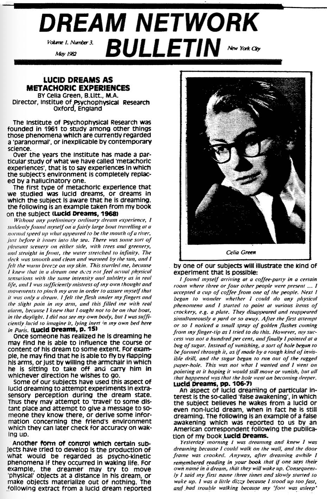

The Institute of Psychophysical Research was founded in 1961 to study among other things those phenomena which are currently regarded a 'paranormal', or inexplicable by contemporary science.
Over the years the Institute has made a particular study of what we have called 'metachoric experiences', that is to say experiences in which the subject's environment is completely replaced by a hallucinatory one.
The first type of metachoric experience that we studied was lucid dreams, or dreams in which the subject is aware that he is dreaming. The following is an example taken from my book on the subject (Lucid Dreams, 1968)
Without any preliminary ordinary dream experience, I suddenly found myself on a fairly large boat travelling at a normal speed up what appeared to be the mouth of a river, just before it issues into the sea. There was some sort of pleasant scenery on either side, with trees and greenery, and straight in front, the water stretched to infinity. The deck was smooth and clean and warmed by the sun, and I felt the warm breeze on my sin. This startled me, because I knew that in a dream one does not feel actual physical sensations with the same intensity and subtlety as in real life, and I was sufficiently mistress of my own thought and movements to pinch my arm in order to assure myself that it was only a dream. I felt the flesh under my fingers and the slight pain in my arm, and this filled me with real alarm, because I knew that I ought not to be on that boat, in the daylight. I did not see my own body, but I was sufficiently lucid to imagine it, lying inert in my own bed here in Paris. (Lucid Dreams, p. 15)
Once someone has realized he is dreaming he may find he is able to influence the course or content of his dream to some extent. For example, he may find that he is able to fly by flapping his arms, or just by willing the armchair in which he is sitting to take off and carry him in whichever direction he wishes to go.
Some of our subjects have used this aspect of lucid dreaming to attempt experiments in extrasensory perception during the dream state. Thus they may attempt to 'travel' to some distant place and attempt to give a message to someone they know there, or derive some information concerning the friend's environment which they can later check for accuracy on waking up.
Another form of control which certain subjects have tried to develop is the production of what would be regarded as psycho-kinetic phenomena if they occurred in waking life. For example, the dreamer may try to move 'physical' objects at a distance in his dream, or make objects materialize out of nothing. The following extract from a lucid dream reported Celia Green by one of our subjects will illustrate the kind of experiment that is possible:
I found myself arriving at a coffee-party in a certain room where three or four other people were present... I accepted a cup of coffee from one of the people. Next I began to wonder whether I could do any physical phenomena and I started to point at various items of crockery, e.g. a plate. They disappeared and reappeared simultaneously a yard or so away. After the first attempt or so I noticed a small spray of golden flashes coming from my finger-tip as I tried to do this. However, my success was not a hundred per cent, and finally I pointed at a bag of sugar. Instead of vanishing, a sort of hole began to be formed through it, as if made by a rough kind of invisible drill, and the sugar began to run out of the ragged paper-hole. This was not what I wanted and I went on pointing at it hoping it would still move or vanish, but all that happened was that the hole went on becoming deeper. (Lucid Dreams, pp. 106-7)
An aspect of lucid dreaming of particular interest is the so-called 'false awakening', in which the subject believes he wakes from a lucid or even non-lucid dream, when in fact he is still dreaming. The following is an example of a false awakening which was reported to us by an American correspondent following the publication of my book Lucid Dreams.
Yesterday morning I was dreaming and knew I was dreaming because I could walk on the wall, and the door frame was crooked. Anyway, after dreaming awhile I remembered reading in your book that if one says their own name in a dream, that they will wake up. Consequently I said my first name three times and slowly started to wake up. I was a little dizzy because I stood up too fast, and had trouble walking because my 'foot was asleep' (common expression for pressure on nerves from lying on arms or legs wrong). I knew I was no longer dreaming because I could no longer walk on the wall and the door frame was straight. I went to the front door and found a note saying that the police would return some stolen goods that afternoon. (There had been prowlers in the neighborhood the past week.) The note was very sloppy and had poor grammar. I went into the bedroom and found the stolen items were still there, and much to my surprise, I awoke. It took another minute to straighten things out in my mind.
The philosophical implications of such experiences have been discussed by my colleague Charles McCreery in his book Psychical Phenomena and the Physical World.
In 1966 we launched an appeal by means of the press and radio for a second type of metachoric experience, which appears to be closely related to lucid dreams, namely 'out-of-the-body experiences', in which the subject seems to leave his physical body and see it from outside. We collected some four hundred cases of this type, and these formed the subject matter of my second book Out-of-the-Body Experiences, which was published in 1968.
The following is an example of the type or experience that was reported to us. The writer in this case was a lady living in Oxford.
I was working as a waitress in a local restaurant and had just finished a 12 hour stint. I was terribly fatigued and was chagrined to find I had lost the last bus... However I started walking as in those days I lived in Jericho, a fifteen minute walk at most. I remember feeling so fatigued that I wondered if I'd make it and resolved to myself that I'd 'got to keep going'. At this time I was where the Playhouse is today. The next I registered, was of hearing the sound of my heels very hollowly and I looked down and watched myself walk round the bend of Beaumont St. onto 'Walton St. - the bit of me that counts - was up on a level with Worcester College chapel. I saw myself very clearly, it was a summer evening and I was wearing a sleeveless, stunning dress. I remember thinking 'so that's how I look to other people'. (Out-of-the-Body Experiences, p. 19)
A number of our subjects have tried ‘travelling’ in the ecsomatic (out-of-the-body) state in order to try and obtain information about distant situations in the real world. For example, one of our subjects ‘willed’ herself to travel some two hundred miles, to visit a theatre in her home town where she knew there was a production in which she was interested.
‘Immediately the desire occurred I was “there”’, she writes, ‘in the foyer of the theatre, and drifted towards the corridor which I knew led to the auditorium. To my surprise, everything appeared to be “wrong way round”: the stairs corridor was on the wrong side of the foyer, and the stage the wrong end of the auditorium, as I remembered it. I drifted some feet above the heads of the audience, in an upright position (and obviously invisible) and was able quite clearly to see and hear the play which was proceeding on the stage. A significant point is that I am rather deaf and could never, in the body, have heard stage dialogue without my hearing aid; nor could I have seen so perfectly without my glasses. Despite the absence of both these artificial aids, I found no difficulty whatever in seeing and hearing perfectly.’ (Out-of-the-Body Experiences, p. 129)
This case illustrates how the apparently realistic visual representation of a scene perceived during an out-of-the-body experience may contain unrealistic elements (in this case the positioning of the contents of the theatre with respect to each other). This naturally suggests that the experience is hallucinatory, though of course this does not preclude the possibility that items of information obtained by some hypothetical process which we may call extrasensory perception have become incorporated into the hallucinatory experience.
A relatively small number of our subjects have also attempted what one might call experiments in psycho-kinesis in the ecsomatic state. That is to say, they have attempted to move the objects they saw in their environment. The following is one of the few cases of this kind reported to us:
...I dreamed that I arose from bed, in my own body, but a weightless form of it. Somehow, I managed to get downstairs, but had great difficulty in keeping myself from bumping the ceiling! ... However, I was determined to prove that I had actually been downstairs when I 'awoke', and seeing a vase of anemones on a side-board, which was higher than the table, and therefore easier to reach, I was able to stretch down my foot as I 'flew' past, and grasp a blue anemone between my toes, but as I moved away it fell on to the floor, and I could not reach it. I memorized the color of the flower, and also noticed a green light coming from a mirror on the wall, for which I could not account. I then experienced a very nasty sensation of 'snapping back' into myself, which made me feel quite ill for a moment ... I awoke at my usual time, and rushed downstairs for evidence of the episode. I saw that the green light was coming from the window, the daylight through the drawn green curtains. There are also lights on at the hospital opposite, during the night which could have had the same effect. The mirror is directly opposite the window, so would have reflected it. I have never noticed this before. As to the flower, I could find none, and also remembered that I never have anemones in the room, because they clash with the color scheme. Rather disappointed, I put it out of my mind, and walked into my landlady’s room opposite, to prepare her breakfast, as she was still asleep. As I crossed the center, I trod on something soft. Looking down, I saw that it was a blue anemone! Quite a distance away was a vase of anemones, of different hue, on a high sideboard. My friend obviously did not recall dropping the flower, and her decision to leave them in the kitchen was an oversight, as it is much too hot in here... (Out-of-the-Body Experiences, pp. 136-7)
Of course psycho-kinesis is not the only possible explanation of this incident. The subject’s landlady confirms the incident of the anemone, saying, 'On another occasion I found a blue anemone on the floor about which she had dreamt ...' However, it is possible that the landlady had dropped the anemone by accident, without being aware of it.
The subject asserts that she had not seen the flower on the floor before finding it there in the morning. Even if she is not mistaken about this, the possibility remains that she might have acquired the information concerning its position by extra-sensory means.
The third main type of experience which we have studied is that of perceiving an apparition, or someone or something that is 'not really there' apparitions of objects as well as people are sometimes reported to us. The following case, taken from the book, Apparitions which I co-wrote with my colleague Charles McCreery, will illustrate one kind of case.
I work in a mill, one night on returning home I had a feeling of slight tummy upset and headache. I decided to have an early night in bed. I put my husband's dinner in the gas oven on a low light to be ready about ten o'clock when he came home. I went out to the coal bunker and banked the fire up also. Then I retired to bed. I must have slept about three hours when I wakened up suddenly to see my 'dead' Grandfather stood by my bedside. He had his back to me, and was looking over his shoulder at me. I could see everything else in the room. It did not appear to be a dream. I could see plainly his snow-white hair just hanging over the top of his macintosh. I could see the wrinkles on the cloth as he stood there. Just looking at me; he looked so real I eventually stretched out my hand to touch him, and, immediately the apparition slowly sort of broke up and melted away. I was dumbfounded. Why, I asked myself, should I 'see' my Grandfather when he had been dead so long ago. My mother had died so much more recently. Thoroughly awakened now by this unexplained happening I decided to go down and take a look at the dinner in the oven. As I went downstairs and opened the door at the bottom I gasped. The house reeked of gas. I can only assume that when I went for the coal, on shutting the back door the draft had blown the gas out. I have always thought since that somehow he came to warn me. It puzzled me so much as to why it should have been Grandfather I saw, when I had not seen him since I was a girl of fifteen. He was then forty seven. He looked so really alive, although he did not speak. I could not smell gas until I went downstairs. (Apparitions, pp. 77-8)
It is perhaps not so obvious why we should be inclined to regard the whole environment as hallucinatory during an experience such as this, and not just the figure of the grandfather. However, we give in our book a number of reasons for regarding this as a possibility, together with a considerable number of cases, the discussion of which sheds interesting light on the question.
Currently the institute is planning an investigation of spontaneous out-of-body experiences phenomena of an apparently inexplicable kind, or what one might call real-life equivalents of the 'psychokinetic' phenomena referred to above. It is possible that our earlier studies of various forms of metachoric experience may help to shed some light on cases of apparent PK in ordinary life.
If any reader of this newsletter has an experience of this kind which they are willing to describe in writing we should be very pleased to hear from them. The address to which to write is 118 Banbury Road, Oxford OX2 6JU, England.
The Institute is also still collecting examples of metachoric experiences of the kinds discussed above, so if any reader has had an experience or experiences which fall into any of these categories we should be pleased to receive accounts of them, including accounts of lucid dreams and false awakenings.
I might add that we are also interested in hearing from people who might like to consider moving to Oxford to work in association with us. If people are interested in joining us we usually suggest that they come in the first instance. Working with us in their spare time enables us to get to know them better and eventually, if they want to join us permanently, it would probably be possible for us to work out a way of supporting them. Persons of student age might like to consider taking a vacation job near us here in Oxford so that they could work with us in their spare time.
Note: The publications of the Institute of Psychophysical Research in Oxford, including those mentioned in the above article, are all available from State Mutual Book & Periodical Service Ltd., 521 Fifth Avenue, New York, N.Y. 10017, U.S.A.